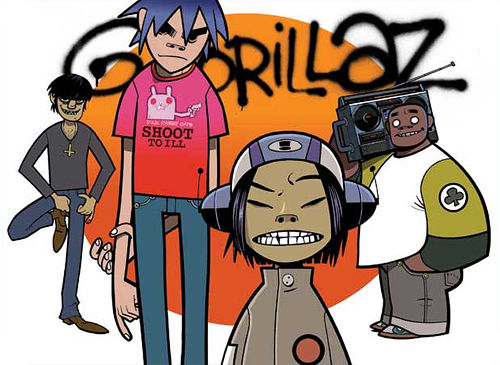

Hobbies
Videjuegos
Unos de mis pasatiempos es jugar videojuegos, ya sea juegos de pc o consola. Esta pasión por estos comenzo cuando mis padres me regalaron una PlayStation con juegos como Crash Bandicoot, el cual jugaba por muchas horas. En la actualidad, juego algunos títulos como Monster Hunter y Crash Team Racing en consola y Valorant o Genshin Impact en pc

Música
Otro de mis pasatiempos es escuchar música y tocar mi guitarra acústica un poco. Antes solía escuchar en su mayoría solo rock y metal de grupo como Radiohead, Gorillaz, Avenged Sevenfold, Aerosmith, My Chemical Romance, Rage Against the Machine, Red Hot Chili Peppers , Green Day, Queen, entre otros. Algunas de mis canciones favoritas son: RHCP - Can't Stop, MCR - Welcome to the Black Parade ,Gorillaz - Sleeping Powder, Jack Stauber - Buttercup, The Offspring - The Kids Aren't Alright, entre otras más. Al mismo tiempo, escuchaba canciones de rock en español, de algunos grupo bastantes conocidos como Los prisioneros, Soda Stereo, Cuartetos de Nos, Enanitos Verdes, Amén, Líbido, Mar de Copas, Hombres G, algunas más que resumiré para no hacer la lista tan larga. Entre mis canciones favoritas de rock en español se encuentran: Café Tacvba - Eres, Soda Stero - Tratame Suavemente, Hombres G - Ataque de las Chicas Cocodrilo, Los Prisioneros - El Baile de Los Que Sobran, Mago de Oz - Costa del Silencio, entre una lista más larga que se puede encontrar una parte en esta playlist de Spotify
